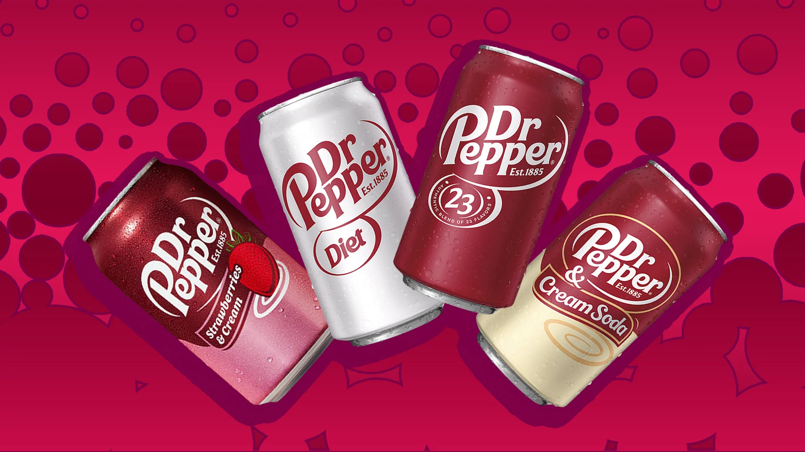

Strawberry & Cream

$8.00
Limited Time Only
BUY NOW BUY 1 GET 1 FREE
Buy a 4 pack now and get zero sugar 4 pack free
Dr Pepper is a carbonated soft drink. It was created in the 1880s by pharmacist Charles Alderton in Waco, Texas, and first served around 1885. Dr Pepper was first nationally marketed in the United States in 1904. It is now also sold in Europe, Asia, North and South America.
Dr Pepper is the second most popular soda in the United States, behind Coca-Cola, and some say it's the best soda because of its unique flavor, marketing, and distribution:
$8.00
BUY NOW BUY 1 GET 1 FREE
Buy a 4 pack now and get zero sugar 4 pack free

$12.00
Buy a 12 pack now and get 10% off your next purchase!